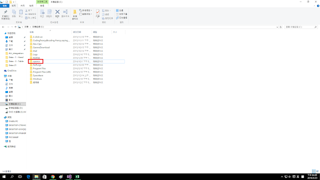
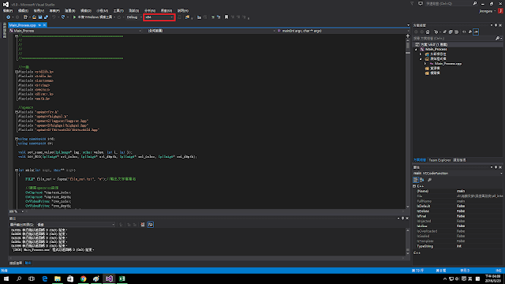

OpenCV 從mat結構學起
Publish Date : 2016-03-23 16:29:00 +0800 CST
相信對於影像處理的人來說
OpenCV是不陌生的吧~
現在對於影像處理的open sourece 很多
但筆者我也沒學過其他的
加上又死守著C++
不會使用C#等其他程式語言
而大學使用opencv大部分都是使用iplimage這個資料結構
但是現在
Mat 似乎比較好用一點
Mat 是對應於 Matlab
處理起來比較方便一些
因為要重新學習
如果錯的地方 還希望大大指教
我是使用visual studio 2013 + opencv 2.4.9 當作建置環境的範例
記得先去openCV官網下載最新版的OpenCV
官方下載點 http://opencv.org/downloads.html
下載完成後記得解壓縮
通常我是放在C:槽
這樣對於以後處理環境的時候比較方便

這個是我方便以後使用OpenCV所製作的ppt
每個步驟照著做就不會錯了
https://drive.google.com/folderview?id=0BzyFNowk9mPJWHJTclV5QzVBcWc&usp=sharing
只要是 include OpenCV2 我都會使用 x64 來編譯

做完以上動作後
就可以開始使用OpenCV